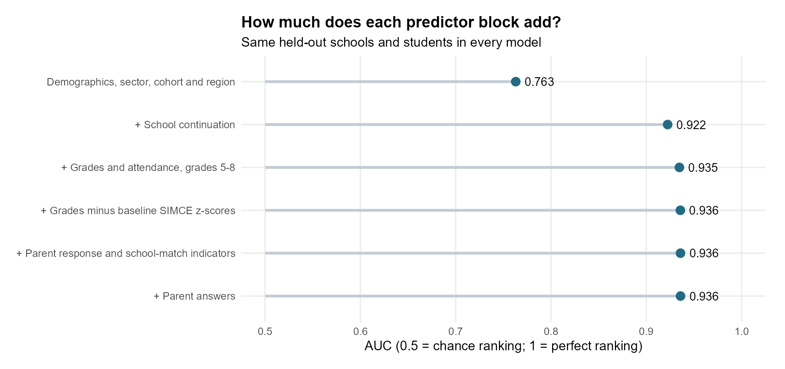
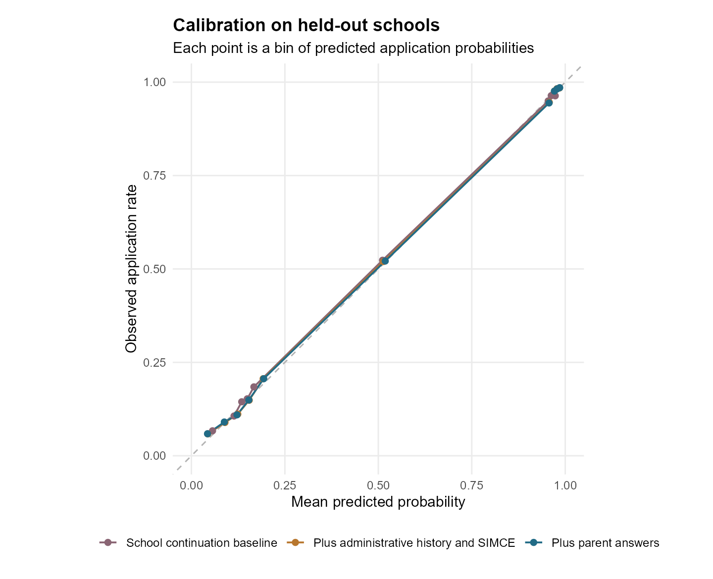

Who applies through SAE in grade 8?
Primary classification benchmark: Can we beat the continuation rule? This compares accuracy and mistakes corrected against predicting no application wherever grade 9 is offered.
The analysis includes 660,426 students in the 2017-2020 grade-8 cohorts within SAE-covered origin regions. The fixed school split assigns 527,933 students to training and 132,493 to testing.
Adding grades, attendance, SIMCE comparisons and parent information to school continuation reduces held-out Brier error by 4.9% (0.0857 to 0.0815).
Parent answer content changes Brier error from 0.0816 to 0.0815, after holding questionnaire response/matching information constant. This is a 0.04% relative reduction.
Excluding grade-8 annual grades, attendance and SIMCE gaps gives AUC 0.934 and Brier 0.0835.
Application rates by school continuation
| School continuation | Students | Application rate |
|---|---|---|
| Ends at 8 in SAE offerings | 287,101 | 95.7% |
| Offers grade 9 | 313,813 | 14.6% |
| Not resolved in SAE offerings | 59,367 | 8.2% |
| Other SAE offering | 145 | 91.0% |
What each predictor block adds
| Model | AUC | Brier | Brier R2 | Log loss |
|---|---|---|---|---|
| Demographics, sector, cohort and region | 0.76304 | 0.193949 | 0.2246 | 0.571182 |
| + School continuation | 0.92238 | 0.085700 | 0.6574 | 0.302089 |
| + Grades and attendance, grades 5-8 | 0.93473 | 0.081929 | 0.6724 | 0.287439 |
| + Grades minus baseline SIMCE z-scores | 0.93574 | 0.081648 | 0.6736 | 0.286362 |
| + Parent response and school-match indicators | 0.93587 | 0.081575 | 0.6739 | 0.286119 |
| + Parent answers | 0.93591 | 0.081542 | 0.6740 | 0.285987 |
| Full model excluding grade 8 annual measures | 0.93369 | 0.083497 | 0.6662 | 0.291552 |

Prediction within school groups
| Group | Model | N | AUC | Brier |
|---|---|---|---|---|
| Offers grade 9 | + School continuation | 62,189 | 0.583 | 0.1296 |
| Not resolved in SAE offerings | + School continuation | 11,531 | 0.663 | 0.0662 |
| Ends at 8 in SAE offerings | + School continuation | 58,754 | 0.612 | 0.0431 |
| Other SAE offering | + School continuation | 19 | 0.0062 | |
| Offers grade 9 | + Grades minus baseline SIMCE z-scores | 62,189 | 0.646 | 0.1263 |
| Not resolved in SAE offerings | + Grades minus baseline SIMCE z-scores | 11,531 | 0.721 | 0.0654 |
| Ends at 8 in SAE offerings | + Grades minus baseline SIMCE z-scores | 58,754 | 0.777 | 0.0376 |
| Other SAE offering | + Grades minus baseline SIMCE z-scores | 19 | 0.0033 | |
| Offers grade 9 | + Parent answers | 62,189 | 0.646 | 0.1261 |
| Not resolved in SAE offerings | + Parent answers | 11,531 | 0.716 | 0.0656 |
| Ends at 8 in SAE offerings | + Parent answers | 58,754 | 0.780 | 0.0375 |
| Other SAE offering | + Parent answers | 19 | 0.0034 |
Full model by cohort
| Cohort | N | AUC | Brier | Observed rate | Predicted rate |
|---|---|---|---|---|---|
| 2017 | 8,454 | 0.918 | 0.1051 | 0.509 | 0.497 |
| 2018 | 28,887 | 0.939 | 0.0832 | 0.542 | 0.545 |
| 2019 | 47,083 | 0.929 | 0.0880 | 0.499 | 0.499 |
| 2020 | 48,069 | 0.942 | 0.0701 | 0.480 | 0.478 |
Parent answer content by group
Positive reductions indicate improved prediction; negative reductions indicate worse prediction on this holdout.
| Group | Brier without answer content | Brier with answer content | Reduction x1000 |
|---|---|---|---|
| Cohort 2017 | 0.105273 | 0.105135 | 0.139 |
| Cohort 2018 | 0.083284 | 0.083158 | 0.126 |
| Cohort 2019 | 0.087964 | 0.087988 | -0.024 |
| Cohort 2020 | 0.070123 | 0.070107 | 0.016 |
| Different grade-4 and grade-8 school | 0.091087 | 0.091143 | -0.056 |
| Same grade-4 and grade-8 school | 0.072873 | 0.072792 | 0.080 |

Which parent answers contribute to prediction?
Exploratory ranking of the fitted model's reliance on observed answers. Positive coefficients associate more favorable answers with higher application odds, conditional on the other predictors.
| Question | Observed test answers | Log-odds / SD | Clustered SE | Held-out log-loss increase x1000 |
|---|---|---|---|---|
| Students level of learning | 58,798 | -0.071 | 0.012 | 0.208 |
| Values formation | 67,316 | -0.058 | 0.012 | 0.120 |
| Communication of school values | 91,842 | -0.048 | 0.012 | 0.107 |
| Teachers encourage students to help one another | 67,249 | 0.058 | 0.012 | 0.100 |
| Work with students with behavior problems | 99,422 | 0.047 | 0.010 | 0.093 |
| School motivates interest in learning | 58,268 | 0.048 | 0.013 | 0.058 |
| School discipline and compliance with rules rating | 99,597 | -0.032 | 0.010 | 0.052 |
| Child feels protected with peers (2014-15) | 59,140 | -0.043 | 0.010 | 0.040 |
| Would enroll child here again | 32,817 | -0.028 | 0.022 | 0.039 |
| Child feels accepted by teachers (2013) | 8,640 | -0.060 | 0.027 | 0.032 |
| Students commitment to school | 67,024 | -0.022 | 0.010 | 0.031 |
| Quality of teaching (2014) | 23,667 | 0.059 | 0.018 | 0.013 |
Interpretation and construction
- Primary outcome: at least one explicit grade-9 application in regular or complementary SAE rounds in the grade-8 cohort year. Automatically appended continuity rows do not establish a choice. Off-platform/regularization activity is not measured.
- School continuation uses that process's A1 offerings. An observed grade-8 origin with no secondary offering is the ends-at-8 group. Early rollout menus omit some nonentry grades. Schools absent from A1 are unresolved, not assumed terminal. The 2018 Nuble boundary change is harmonized for coverage.
- The main exercise is retrospective: annual grade-8 performance and attendance can postdate application. The model excluding those measures still uses annual origin-school records, so it is not a validated application-date forecast.
- Grades, attendance and their peer-relative z-scores enter separately for grades 5-8, with squares. Math and language gaps equal grade z-score minus the baseline SIMCE z-score among the same later schoolmates. These are relative positions, not learning gains. SIMCE first uses national test-year normalization. Undefined peer SDs remain missing.
- All model comparisons use identical pupils and a fixed 80/20 split by grade-8 origin school across cohorts. Median imputation and predictor scaling use training data only. Context controls are cohort-by-region, sector, gender and age. Schools with missing continuation information remain in the model.
- The 39 parent questions/constructs were chosen from the source questionnaires before estimating outcome associations. They describe the grade-4 school. Wording and availability vary by year; exact codes and wording are saved in the parent dictionary. Higher valid ratings are favorable; the 2013 agreement scale and 2016 mistreatment response are reversed.
- The parent table ranks model reliance: average increase in test log loss when one observed answer is shuffled within survey-year, continuation and school-match strata (10 repetitions). This is exploratory held-out permutation importance, not a unique contribution, causal effect, or significance test. Correlated questions may substitute for one another.
- Parent coefficients are jointly conditional log-odds per training-sample SD, with model-derived origin-school-clustered SEs. Full coefficients and BH-adjusted parent p-values are saved. No causal interpretation is assigned.
- All student-school histories are retained. The model selects one annual record using the project attendance/promotion hierarchy and the latest observed year for each grade. Within-year movers may have a different school at application. Missing SIMCE/questionnaire information does not exclude students. Zero attendance is retained as a valid percentage.
- Brier R2 compares squared probability error to predicting the training prevalence for everyone. Subgroup AUC is particularly important because the school-continuation distinction strongly predicts overall participation. Small Other SAE offering groups have unstable metrics.
- This is a first fixed-specification result on one held-out-school split; it does not establish stability across alternative splits, future cohorts, or functional forms. No distance/comuna analysis or separate realized-school-change model is included.